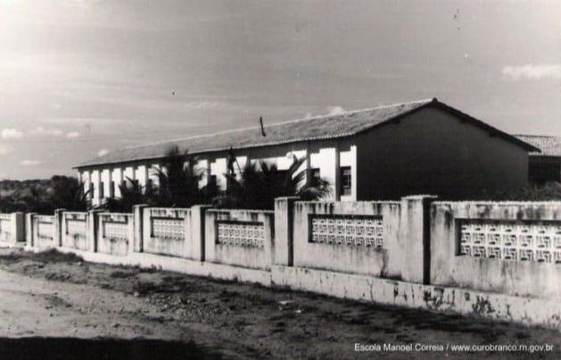

.jpg)
História Manoel Correia
O prédio da escola foi construido em 1966, atendendo ao oficio enviado em 23/03/66, por Ady Medeiros, diretora do grupo escolar Coronel Florentino Cunha, ao secretário de Educação Jarbas Ferreira Bezerra, na gestão de Manoel Nogueira do Nascimento. Na época, o governador do estado era o Monsenhor Walfredo Gurgel. Concluido o prédio, recebeu a denominação de Grupo Escolar Manoel Correia, como "patrono" em homenagem pelo mesmo ser sido um dos fundadores de nossa cidade e contava com três salas de aula, uma secretaria, uma cozinha, dois banheiros, uma sala para biblioteca, um quarto para vigia, uma área para recreio e murada. A inauguração, porém, só veio ocorrer em 1969, quando o governador veio inaugurar a energia elétrica da cidade. De acordo com o oficio nº 01/67, a escola começou a funcionar no dia 11/02/67, oferecendo o ensino do 1º ano 5º ano, nos turnos matutino, intermediário e vespertino, dando assim, continuidade ao trabalho desenvolvido no Grupo Escolar Coronel Florentino Cunha, cujo quadro de funcionários e turmas de alunos foram transferidos para esca unidade de ensino.
Tave como primeira diretora Ady Medeiros e vice-diretora Ivanilde Clementina da Silva (in memoriam), supervisora Maria Lúcia da Silva e um quadro de professores formado por: Maria de Lurdes da Silva Souto, Luzia Alves, Júlia Alves de Azevedo (in memoriam), Maria Alice de Medeiros, Iraci dos Anjos Sales, Maria Aparecida de Medeiros, Severina Costa, Maury Medeiros de Lucena e Maria José da Nóbrega Pereira. Como pessoal de apoio, contava com uma porteira: Amélia Dias da Silva (in memoriam), duas serventes: Neuza Maria de Medeiros (in memoriam) e Francisca de Souza Araújo (Chicuta), uma merendeira: Maria Helena da Silva e um vigia: Florêncio Medeiros de Araújo.
De acordo com o decreto nº 7.043 de 07/12/1976 publicado no DOE em 10/12/76, que transformou todos os Grupos Escolares em Escolas Estaduais Ensino de 1º Grau, a referida escola passou a denominar-se - Escola Estadual Manoel Correia - Ensino de 1º Grau. No decorrer dos anos, a escola vem prestando relevantes serviços para o bem da comunidade, oferecendo oportunidades para o crescimento intelectual e profissional através dos cursos: Projeto Minerva, CIPES, Educação Integrada (Supletivo de 1º Grau), CNEC (5 a 8" série), Supletivo de Ensino Básico (SEB-1 a 4 série), Supletivo de 1º Grau (SPG-5 a 8" série).
Hoje, a referida unidade de ensino oferece Ensino Fundamental (1º ao 9º ano). EJA (Educação de Jovens e Adultos 1º ao 9° ano) e Ensino Médio (Modalidade Regular e Normal) e Ensino Médio Profissionalizante Técnico de Informática. A estrutura fisica da escola passou por três reformas: a primeira, durante a gestão de Francisca Salete da Silva Sousa, a segunda, na gestão de Josilene Siqueira da Costa, e, a terceira, na gestão de Marilene Lucena de Sousa. Teve como diretores: Ady Medeiros (1967-68), Maria Maura de Lucena Freitas (68-72), Maria José da Nóbrega Pereira (1973), Maria do Socorro de Jesus Nascimento (1974-1979), Maria do Socorro Lucena (1980- 1982), Francisca Salete da Silva Sousa (1983-1994). Rosa Núbia Dias dos Santos (1994-1995), Joselene Siqueira da Costa (1995-2002), Marilene Lucena de Sousa (2003-2007), Francisco de Souza Costa (2008-2009), Eurinete dos Santos Silva (2010-2012), Paulo Azevedo da Costa (junho a outubro de 2012- 2013-in memoriam), Núbia Maria da Fonseca (2014-2016),Rosa Núbia Dias dos Santos (2017 até 2019), e atualmente, Eurinete dos Santos Silva mais uma vez eleita democraticamente pelo voto da comunidade escolar para o mandato de três anos (2020 até 2023).
No dia 27/02/2003, ao ser nomeada diretora pela governadora recém eleita Wilma de Faria, a professora Marilene Lucena de Sousa buscou junto à SEECD/RN, através de oficio, transformar a referida escola em uma instituição que atendesse até o Ensino Médio. Então, em atendimento a solicitação, a escola foi transformada em Escola Estadual Manoel Correia- Ensino Fundamental e Médio, de acordo com o decreto nº 16.876 de 29/05/2003, publicado no DOE, edição de 30/05/2003. - A partir de 1º de janeiro de 2004, os professores do SEECD que estavam cedidos ao municipio por meio de convênio, foram transferidos para a referida escola, para assim, exercerem as suas atividades normais nessa unidade de ensino. Assim, a escola passou a funcionar Ensino Fundamental (1 a 8ª série), Ensino Médio (1º, 2º e 3º ano), e Ensino Médio Modalidade Normal e continuou oferecendo EJA - Educação de Jovens e Adultos (1º ao 4° Nivel). A frente da direção, a professora Marilene Lucena de Sousa também tinha outro grande propósito que era a reforma e ampliação da escola para, assim, dar melhores condições de trabalho e funcionamento e oferecer uma educação de boa qualidade a toda a comunidade escolar.
Então, no dia 29 de março de 2005 em atendimento ao oficio enviado pela mesma, a escola começou a ser reformada e ampliada, o que se considera até hoje, como sendo a maior reforma acontecida na referida escola, durante esses 43 anos de história na educação. Neste mesmo ano de 2005, a escola passou também pelo processo de democratização, em que foram realizadas eleições diretas para diretor e vice-diretor, para um mandato de 2 anos de acordo com a lei nº 290/2005, tendo duas chapas concorrentes ao pleito, sendo vencedora a chapa 2, composta pela diretora Marilene Lucena de Sousa e vice-diretor José Francisco de Figueiredo, que já estavam à frente da direção da escola.
No ano de 2017, a escola conta com 443 alunos, distribuidos nos 3 turnos de funcionamento, atendendo 224 alunos no Ensino Fundamental, distribuídos no 4° e 5º ano (anos iniciais), 6º ao 9º ano (anos finais), 55 alunos do 4° e 5º periodo do EJA e 124 alunos da 1 à 3" série do Ensino Médio (modalidade regular) e 40 alunos no Ensino Médio Profissional - Técnico de Informática. Seu quadro de funcional é composto por 57 funcionários, sendo: 01 diretor, 01 vice-diretor, 01 coordenador pedagógico, 01 coordenador administrativo-financeiro, 01 inspetor, 02 supervisores, 03 regentes de biblioteca, 05 TEDS, 02 auxiliares de secretaria, 18 professores de sala de aula, 02 professores de telessala e 02 no laboratório de informática, 08 ASGS e 02 vigias. A EEMC é considerada a maior e uma das melhores da cidade, no que se refere à sua estrutura que conta com 01 sala de informática, 01 laboratório de ciências, 01 sala de múltiplo uso, 01 biblioteca comunitária, 08 salas de aula, 01 sala de professores, 01 sala de grêmio, 01 sala de matéria esportivo, 01 secretaria, 01 sala de direção, 01 sala de especialista, 01 sala de material didático, 01 almoxarifado, 01 cozinha, 01 área de serviço, 01 cantina, 01 sala de leite, 02 salas de depósitos, 05 banheiros, o pátio coberto e um moderno conjunto de equipamentos e recursos tecnológicos; além de contar com um quadro excelente de funcionários, coordenadores, professores e supervisores, garantindo uma educação de boa qualidade, atendendo, assim aos anseios de toda a comunidade escolar.